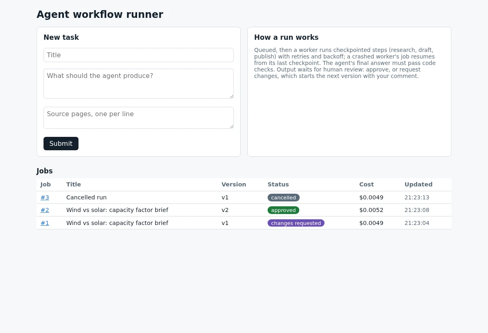
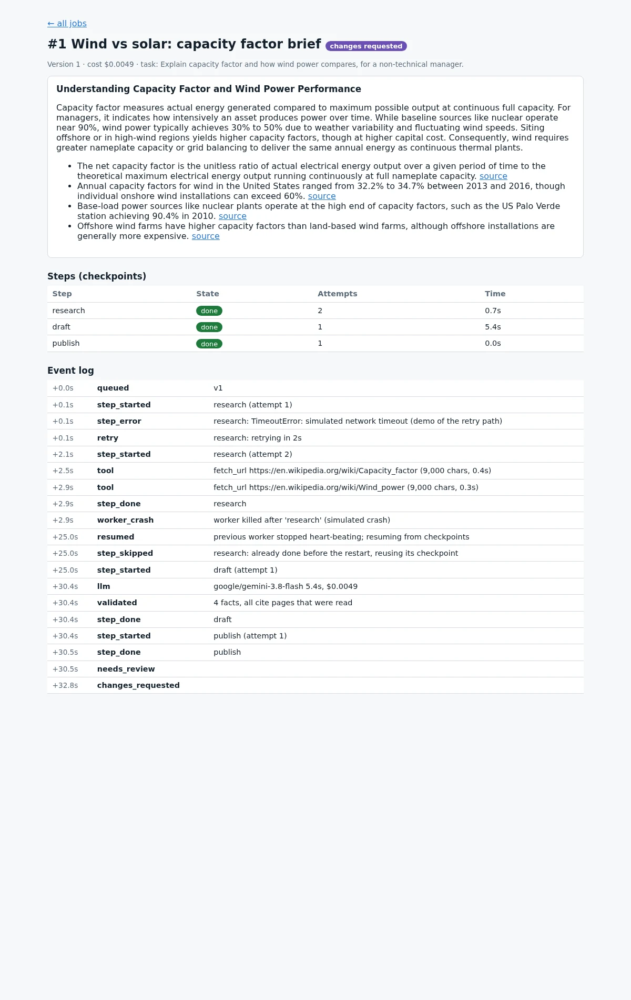
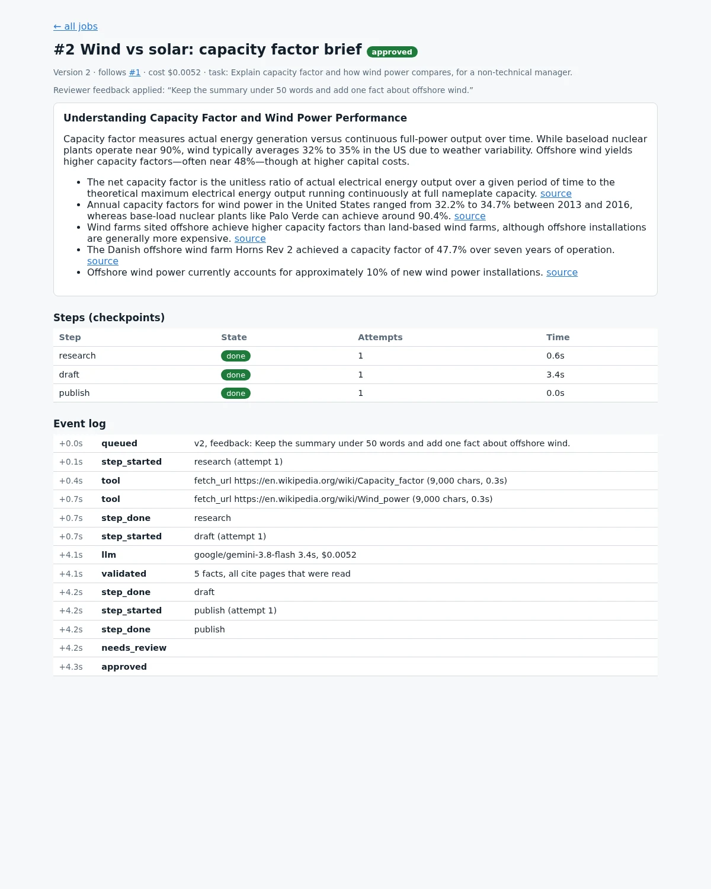
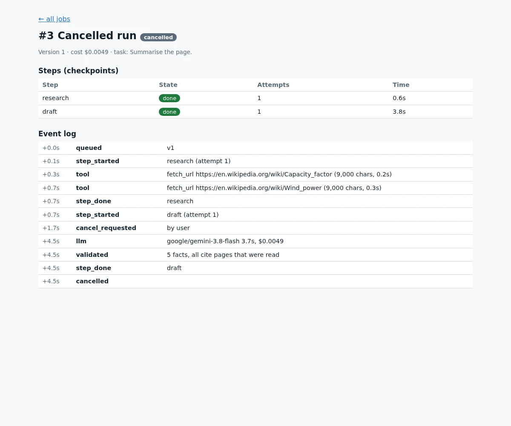

One complete workflow: from submitting a task to reviewing its output
A working runner for AI-assisted workflows: a dashboard to submit and review, a background worker with checkpointed steps, retries, cancellation and crash recovery, a tool-calling agent whose final answer must pass code checks, and a cost per run. Every screenshot below comes from a real run, including the failures, which were forced on purpose.
What was tested, for real
| Situation | What happened |
|---|---|
| Network error while the agent reads a page | Step failed, retried after 2 s with backoff, succeeded; both attempts are in the log. |
| Worker process killed mid-job | The job's heartbeat went stale; a new worker picked it up and resumed from the last checkpoint: the pages already read were reused, not fetched again. |
| Agent's final answer checked by code | Every run passed validation: each fact cited a page the agent had actually read. A fact citing an unread page, or a summary over the limit, is rejected and sent back to the agent to fix (built in; not triggered in these runs). |
| Reviewer requests changes | Version 2 ran with the reviewer's comment and the previous output as context; the summary shrank to under 50 words and gained the requested facts, then was approved. |
| User cancels a running job | The run stopped at the next safe point (after the in-flight model call) and nothing was published. |
| Cost visibility | Real API cost recorded per call and per run (about half a US cent per brief with Gemini Flash), with automatic fallback to a second model. |
Dashboard

Retry, crash and resume, in one job's event log



How it is built
- Jobs, steps and events in one database (SQLite in the demo; the same schema runs on PostgreSQL). Each step stores its output, so it is a checkpoint.
- Workers claim jobs atomically and send a heartbeat; a job whose heartbeat goes stale is picked up by another worker and resumed. Steps retry with exponential backoff; cancellation is checked between steps and between agent turns.
- Agent: tool calling over one provider layer with model fallback. Tools live in a registry (here: an allow-listed page reader) and every call is logged with its duration.
- Human in the loop: outputs wait for review; "request changes" creates the next version linked to the previous one, so the history is kept.
- Python, FastAPI, SQLite, OpenRouter (Gemini Flash with fallback). Next.js, a durable queue and object storage are the natural next steps for a production dashboard.